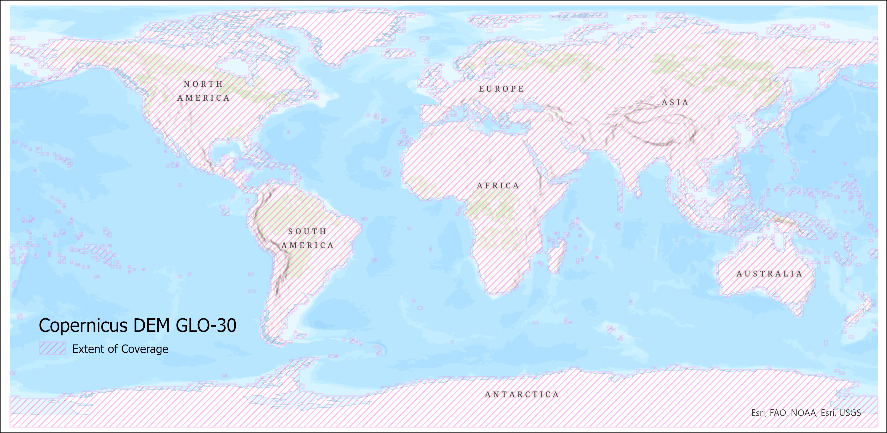
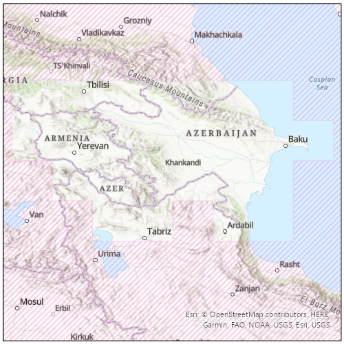
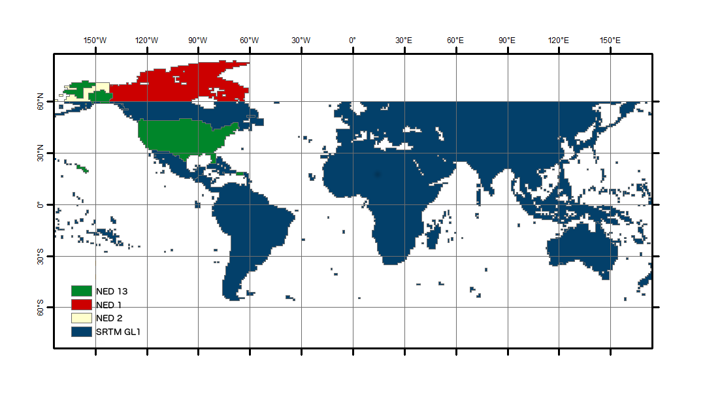
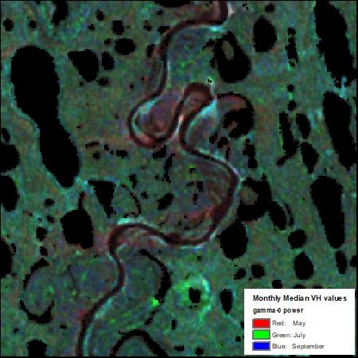
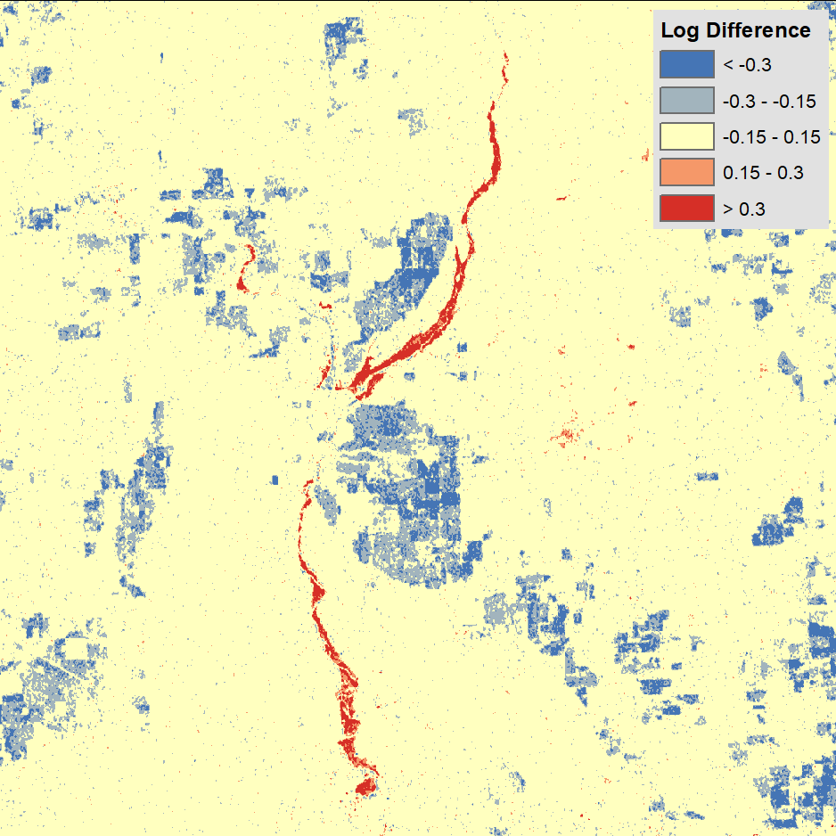
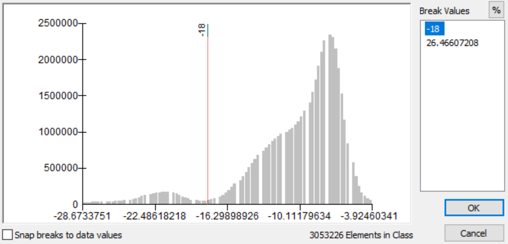
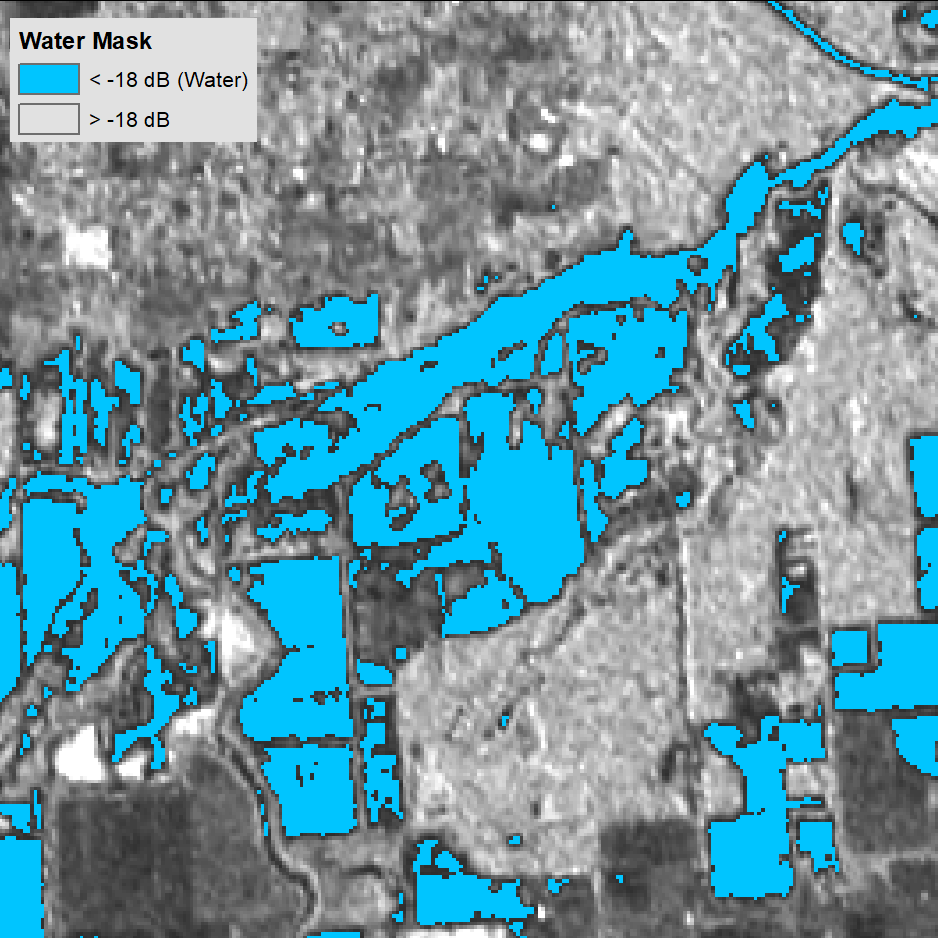
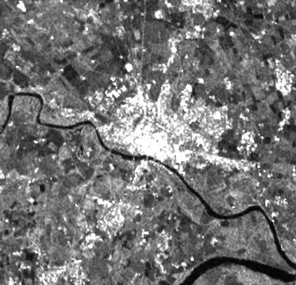
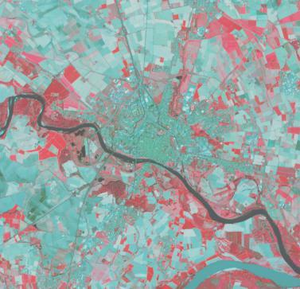
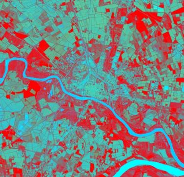

Sentinel-1 RTC Product Guide¶
This document is a guide for users of Radiometrically Terrain Corrected (RTC) Sentinel-1 products generated by the Alaska Satellite Facility (ASF). Users can request RTC products On Demand in ASF's Vertex data portal, or make use of our Python SDK or API.
SAR datasets inherently contain geometric and radiometric distortions due to terrain being imaged by a side-looking instrument. Radiometric terrain correction corrects these distortions and creates analysis-ready data suitable for use in GIS applications or time-series analysis. RTC processing is a required first step for many amplitude-based SAR applications.
ASF's Sentinel-1 On-Demand RTC products are generated using GAMMA Software. Products are distributed as GeoTIFFs (one for each available polarization) projected to the appropriate UTM Zone for the location of the scene.
A Digital Elevation Model (DEM) is required for processing RTC. ASF uses the best publicly-available DEM with full coverage of the processing area.
For a step-by-step tutorial on ordering On-Demand RTC Products using Vertex, visit our RTC On Demand story map, which also includes links to sample workflows using Sentinel-1 RTC products for GIS applications.
Introduction¶
Sentinel-1 Mission¶
The Sentinel-1 mission collects C-band band SAR from a pair of polar-orbiting satellites launched by the European Space Agency (ESA) as part of the Copernicus program. The Sentinel-1A satellite was launched April 3, 2014, and the Sentinel-1B satellite was launched April 25, 2016.
The two Sentinel-1 satellites each have a 12-day repeat cycle, but their orbits are offset 180 degrees so that one or the other will pass over the same location on earth every 6 days. Most areas of the earth will still only have imagery collected every 12 days, but Europe and select areas of interest are imaged with a 6-day interval, as described in the mission observation scenario.
Because this is a polar-orbiting satellite constellation, areas near the poles may have a number of overlapping paths, resulting in even more frequent acquisitions with similar footprints.
The relatively short interval between acquisitions makes this SAR dataset a very useful tool for monitoring rapid or sudden landscape changes. In addition, SAR can image the earth's surface through cloud or smoke cover and does not require sunlight, so valid imagery can be collected on every pass. This is particularly useful for monitoring conditions during natural disasters such as hurricanes or wildfires, or in areas that are prone to frequent cloud cover.
SAR Distortions¶
There are a number of distortions inherent to SAR data due to the side-looking nature of the sensor, and these impacts will be more prevalent in areas with rugged terrain. The process of radiometric terrain correction addresses the geometric distortions that lead to geolocation errors in terrain features, and also normalizes the backscatter values based on the actual area contributing returns. This process generates an image that aligns well with other geospatial data and is suitable for GIS applications or time-series analysis.
The key distortions present in SAR images are foreshortening, layover and shadow (Figure 1).

Figure 1: Distortions induced by side-looking SAR. Ground points a, b, c are ‘seen’ by radar as points a’, b’, c’ in the slant range. Credit: Franz J. Meyer
In the case of foreshortening, the backscatter from the front side of the mountain is compressed, with returns from a large area arriving back to the sensor at about the same time. This results in the front slope being displayed as a narrow, bright band.
When layover occurs, returns from the front slope (and potentially even some of the area before the slope starts) are received at the same time as returns from the back slope. Thus, area in the front of the slope is projected onto the back side in the slant range image. In this case, the data from the front slope cannot be extracted from the returns.
Another condition that results in missing data is radar shadow. In this case, the angle of the back slope is such that the sensor can not image it at all. These areas with steep back slopes offer no information to the SAR sensor.
When RTC is performed, foreshortened areas are corrected based on the DEM. Areas impacted by layover or shadow, however, do not actually have data returns to correct. In this case, the pixels in the resulting RTC image will have a value of No Data. We do not interpolate missing data; users who would like to fill holes with estimated values will need to do so as appropriate for their particular application.
The RTC product package includes a Layover-Shadow mask (see Image Files section) If you find that there are No Data pixels in your image, you can refer to that reference raster to see if the missing pixels are due to layover or shadow effects.
Digital Elevation Models¶
The quality of the terrain corrections are directly related to the quality of the digital elevation models (DEMs) used in the process of geometrically and radiometrically correcting the SAR imagery. We use DEMs that are publicly available and have wide-ranging coverage.
In the past, ASF maintained a collection of DEMs that were pre-processed as appropriate for SAR workflows, and applied a preference hierarchy so that the best available DEM in any given area would be automatically selected for processing. With the public release of the GLO-30 Copernicus DEM, we have changed our default DEM strategy to leverage a cloud-hosted copy of the global Copernicus DEM. This is now the default DEM for processing RTC products.
Copernicus DEM GLO-30 Now Available
The Copernicus DEM GLO-30 Public dataset is now the default DEM for RTC processing.
Processing RTC using the legacy DEMs is still available as an option for processing On Demand in Vertex and when using the API or SDK, but we recommend using the Copernicus DEM whenever possible.
Table 1 summarizes ASF's DEM sources. Note that in each case, the DEM is resampled to RTC spacing and reprojected to a UTM Zone (WGS84), and a geoid correction is applied before being used for RTC processing.
| Resolution | DEM | Vertical Datum | Area | Posting | Priority |
|---|---|---|---|---|---|
| Medium | GLO-30 | EGM2008 | Global | 1 arc second | Default |
| High | NED13 | NAVD88 | CONUS, Hawaii, parts of Alaska | 1/3 arc seconds | 1 |
| Medium | SRTMGL1 | EGM96 | 60 N to 57 S latitude | 1 arc second | 2 |
| Medium | NED1 | NAVD88 | Canada | 1 arc second | 3 |
| Low | NED2 | NAVD88 | Parts of Alaska | 2 arc seconds | 4 |
Table 1: DEMs used for RTC processing. Note that the Copernicus 30 m DEM is the default, while the other four DEMs are only used if the legacy option is invoked.
When ordering On-Demand RTC products, you can choose to include a copy of the DEM used for RTC processing in the RTC product package. This DEM copy is converted to 16-bit signed integer format, but is otherwise the same as the DEM used in the RTC process. Note that the height values will differ from the original source DEM in all cases, due to the geoid correction applied to prepare the DEM for use in RTC processing.
Copernicus DEM¶
The GLO-30 Copernicus DEM provides global coverage (with the current exception of an area covering Armenia and Azerbaijan, see Figure 3) at 30-m pixel spacing. When an RTC job is requested, we download the required DEM tiles from the Copernicus Digital Elevation Model (DEM) GLO-30 Public dataset available in the Registry of Open Data on AWS, managed by Sinergise. We mosaic the tiles and reproject them to the appropriate UTM Zone for the location of the SAR granule to be processed, resampling them to match the pixel spacing and alignment of the RTC product. A geoid correction is applied before it is used for RTC processing.
Figure 2 shows the coverage of the Copernicus DEM GLO-30 Public dataset, and Figure 3 details the land area currently not covered.

Figure 2: Copernicus DEM GLO-30 coverage map

Figure 3: Detail of area currently not covered by Copernicus DEM GLO-30
Legacy DEMs¶
The legacy DEMs were pre-processed by ASF to a consistent raster format (GeoTIFF) from the original source formats: height (*.hgt), ESRI ArcGrid (*.adf), etc. Many of the NASA-provided DEMs were provided as orthometric heights with EGM96 vertical datum. These were converted by ASF to ellipsoid heights using the ASF MapReady tool named geoid_adjust. The pixel reference varied from the center (pixel as point) to a corner (pixel as area). The GAMMA software used to generate the RTC products uses pixel as area and adjusts DEM coordinates as needed.
These processed DEM collections are stored by ASF in AWS. When an RTC job is requested, the best-available DEM covering the SAR granule is selected, and the necessary tiles are reprojected to a mosaic in the UTM Zone appropriate for the granule location.
If legacy DEM processing is selected, one of the following DEMs will be used:
- The National Elevation Dataset (NED) ⅓ arc second (about 10 m resolution) DEM covers the continental U.S. (CONUS), Hawaii, and parts of Alaska.
- Shuttle Radar Topography Mission (SRTM) GL1 data at 30 m resolution is used where NED 13 is not available.
- 1 arc second NED gives coverage of Canada at about 30 m resolution.
- 2 arc second NED (about 60 m) covers the remaining parts of Alaska above 60 degrees northern latitude.
Since more than one DEM may be available in legacy processing, DEMs are selected in priority order as listed in Table 1. DEM coverage of at least 20% from a single DEM source is required for legacy processing to proceed. In no case will the DEM selected be from more than one source; only the single best source of terrain height values is used for a given scene.
Figure 4 shows the coverage of the various legacy DEM sources.

Figure 4: Coverage of the various legacy DEM sources used for terrain correction
Radiometric Terrain Correction Workflow¶
Pre-processing¶
The first step of pre-processing is the selection of the best DEM for the terrain correction. The DEM tiles are assembled to ensure sufficient coverage for the terrain correction of the Sentinel-1 granule. The application of the calibration parameters and multi-looking are the only pre-processing steps applied to the SAR image.
Terrain Correction¶
The terrain correction is performed in slant range geometry. A mapping function is created, mapping from DEM space into SAR space. The actual mapping of the initial image into projected space is only applied once to mitigate the propagation of any resampling errors. All intermediate steps only update the look-up table used for the mapping.
By default, images are not coregistered to the DEM. While RTC results can be improved by matching imagery to a high-quality DEM, different acquisitions over the same area may not always be matched to the DEM in the same way, due in part to the presence of speckle. This can introduce spatial inconsistencies to the dataset, especially when viewing a time-series of RTC images. For consistency, we use the geolocation from the Sentinel-1 state vectors rather than matching the geolocation based on DEM features.
When custom-ordering imagery, however, the DEM Matching option is available for selection. In this case, the first step is the co-registration of the SAR image with a simulated SAR image derived from the DEM. An initial offset is first attempted as a single match; if it fails, a larger number of image chips are used to determine an average offset in azimuth and range direction. This initial offset is then refined using strict matching criteria. Matching may fail for three different reasons: (1) no match can be found, (2) the magnitude of the residual offset errors is greater than 2 pixels, or (3) the maximum calculated offset is greater than 50 m. In any of these cases, the dead reckoning approach is taken when matching fails. This approach solely relies on the geolocations calculated from state vectors (the same approach used when DEM matching is not selected as an option) - no geolocation refinement is applied.
Radiometric Correction¶
During processing, a surface scattering area image for the scene is calculated and saved. This projected area image is used to create the RTC product - the SAR image is multiplied by the ratio of an ellipsoidal scattering image (used during calibration) and this scattering area image. Note that this image is always projected to gamma-nought (γ0).
Geocoding¶
In a final step, the RTC product is geocoded into map-projected space. Thus, radiometric terrain correction results in a geocoded radiometrically calibrated multi-looked image with gamma-nought (γ0) power scale values by default, though there are options to process to sigma-nought (σ0) radiometry and amplitude scale.
Post-Processing¶
After the terrain correction is completed, the RTC products are exported to GeoTIFF format. If the scene being processed is dual polarization, users have the option to add a full-resolution RGB Decomposition GeoTIFF to the RTC product package. Side products including the DEM, layover shadow map, scattering area map, and incidence angle map are converted into GeoTIFF format. In addition, a README text file, browse images, item-specific ArcGIS-compatible XML metadata files, a log file, and a shapefile indicating the data extent are generated for the product.
Product Packaging¶
Naming Convention¶
The naming convention for the RTC products follows this pattern for its base names:
S1x_yy_aaaaaaaaTbbbbbb_ppo_RTCzz_u_defklm_ssss
Example: S1A_IW_20180128T161201_DVP_RTC30_G_gpuned_FD6A
| Element | Definition | Example |
|---|---|---|
| x | Mission: A or B | A |
| yy | Beam Mode | IW |
| aaaaaaaa | Start Year-Month-Day | 20180128 |
| bbbbbb | Start Hour-Minute-Second | 161201 |
| pp | Polarization: Dual-pol (D) vs. Single-pol (S), Primary Polarization (H or V) | DV |
| o | Orbit Type: Precise (P), Restituted (R), or Original Predicted (O) | P |
| zz | Terrain Correction Pixel Spacing (m) | 30 |
| u | Software Package Used: GAMMA (G) | G |
| d | Gamma-0 (g) or Sigma-0 (s) Output | g |
| e | Power (p) or Amplitude (a) Output | p |
| f | Unmasked (u) or Water Masked (w) | u |
| k | Not Filtered (n) or Filtered (f) | n |
| l | Entire Area (e) or Clipped Area (c) | e |
| m | Dead Reckoning (d) or DEM Matching (m) | d |
| ssss | Product ID | FD6A |
Table 2: Naming convention for RTC products
Default Settings¶
The default settings for RTC products are as follows:
| Setting | Default |
|---|---|
| Radiometry | Gamma-0 (g) |
| Scale | Power (p) |
| Water Mask | No water mask applied (u) |
| Speckle Filter | Not filtered (n) |
| Clipping | Entire extent of input granule (e) |
| DEM Matching | No matching; dead reckoning is used (d) |
Table 3: Default settings for RTC products
Image Files¶
All files are stored in a folder named using the above convention, and the base name for each file matches the folder name. Multiple types of image files are present in this folder, and some of the files are optional. Users can choose to exclude the RGB Decomposition GeoTIFF, scattering area map, DEM, and incidence angle map rasters when ordering On-Demand RTC products.
| Extension | Description | Example |
|---|---|---|
| _VV.tif, _VH.tif, _HH.tif, _HV.tif | Terrain corrected product stored in separate files for each available polarization in GeoTIFF format | S1A_IW_20180128T161201_DVP_RTC30_G_gpuned_FD6A_VV.tif |
| .png | Greyscale browse image | S1A_IW_20180128T161201_DVP_RTC30_G_gpuned_FD6A.png |
| _rgb.png | Color browse image | S1A_IW_20180128T161201_DVP_RTC30_G_gpuned_FD6A_rgb.png |
| .kmz | Zipped Google Earth image | S1A_IW_20180128T161201_DVP_RTC30_G_gpuned_FD6A.kmz |
| _rgb.kmz | Zipped Google Earth color image | S1A_IW_20180128T161201_DVP_RTC30_G_gpuned_FD6A_rgb.kmz |
| _rgb.tif | Color decomposition in GeoTIFF format (optional) | S1A_IW_20180128T161201_DVP_RTC30_G_gpuned_FD6A_rgb.tif |
| _area.tif | Scattering area map in GeoTIFF format (optional) | S1A_IW_20180128T161201_DVP_RTC30_G_gpuned_FD6A_area.tif |
| _dem.tif | DEM used for terrain correction in GeoTIFF format (optional) | S1A_IW_20180128T161201_DVP_RTC30_G_gpuned_FD6A_dem.tif |
| _inc_map.tif | Incidence angle file in GeoTIFF format (optional) | S1A_IW_20180128T161201_DVP_RTC30_G_gpuned_FD6A_inc_map.tif |
| _ls_map.tif | Layover/shadow mask in GeoTIFF format | S1A_IW_20180128T161201_DVP_RTC30_G_gpuned_FD6A_ls_map.tif |
Table 4: Image files in product package
The RTC products (one for each available polarization) are generated as 32-bit floating-point single-band GeoTIFF files, as are the incidence angle and scattering area maps. The RGB Decomposition is a 3-band unsigned 8-bit GeoTIFF file, the layover/shadow mask is a single-band unsigned 8-bit GeoTIFF, and the DEM is a 16-bit unsigned integer GeoTIFF. The browse images (both grayscale and color) are generated in PNG format, and are each 2048 pixels wide. Finally, KMZ files suitable for viewing in Google Earth are included. Note that colorized products (RGB Decomposition GeoTIFF or color browse PNG) can only be created for dual-polarization (SDV and SDH) granules, not for single-polarization (SSV or SSH).
Metadata Files¶
The product package also includes a number of metadata files.
| Extension | Description | Example |
|---|---|---|
| .README.md.txt | README file | S1A |
| .log | Log file of the processing steps | S1A |
| .tif.xml | ArcGIS compliant XML metadata for GeoTIFF files | S1A |
| .png.xml | ArcGIS compliant XML metadata for PNG files | S1A |
| .png.aux.xml | Geolocation metadata for PNG browse images | S1A |
Table 5: Metadata files and their extensions
README File¶
The text file with extension .README.md.txt explains the files included in the folder, and is customized to reflect that particular product. Users unfamiliar with RTC products should start by reading this README file, which will give some background on each of the files included in the product folder.
ArcGIS-Compatible XML Files¶
There is an ArcGIS-compatible xml file for each raster in the product folder. When ArcGIS Desktop users view any of the rasters in ArcCatalog or the Catalog window in ArcMap, they can open the Item Description to view the contents of the associated xml file. ArcGIS Pro users can access the information from the Metadata tab. These files will not appear as separate items in ArcCatalog, though if you use Windows Explorer to look at the contents of the folder you will see them listed individually. Because each one is named identically to the product it describes (with the addition of the .xml extension), ArcGIS recognizes the appropriate file as the raster’s associated metadata, and integrates the metadata accordingly.
ArcGIS users should take care not to change these xml files outside of the ArcGIS environment; changing the filename or content directly may render the files unreadable by ArcGIS.
Those not using ArcGIS will still find the contents of these xml files useful, but will have to contend with the xml tagging when viewing the files as text or in a browser.
Auxiliary Geolocation Files¶
Geolocation XML files (aux files) are included for each of the PNG browse images to allow for proper display in GIS platforms.
Log File¶
A log file detailing the processing parameters and outputs is also included for reference.
Shapefile¶
A shapefile indicating the extent of the RTC data coverage is included in the package.
| Extension | Description | Example |
|---|---|---|
| _shape.dbf _shape.prj _shape.shp _shape.shx | Shapefile (.shp) and supporting files | S1A_IW_20180128T161201_DVP_RTC30_G_gpuned_FD6A_shape.shp |
Table 6: Shapefile files and their extensions
SAR Scales¶
Power Scale¶
Note that the default output of Sentinel-1 RTC products from HyP3 is in power scale. The values in this scale are generally very close to zero, so the dynamic range of the RTC image can be easily skewed by a few bright scatterers in the image. Power scale is appropriate for statistical analysis of the RTC dataset, but may not always be the best option for data visualization.
When viewing an RTC image in power scale in a GIS environment, it may appear mostly or all black, and you may need to adjust the stretch to see features in the image. Often applying a stretch of 2 standard deviations, or setting the Min-Max stretch values to 0 and 0.3, will greatly improve the appearance of the image. You can adjust the stretch as desired to display your image to full advantage. Be aware that this does not change the actual pixel values.
In some cases, it may be desirable to convert the actual pixel values to a different scale. Two other scales commonly used for SAR data are amplitude and dB.
Amplitude Scale¶
Amplitude scale is the square root of the power scale values. This brightens the darker pixels and darkens the brighter pixels, narrowing the dynamic range of the image. In many cases, amplitude scale presents a pleasing grayscale display of RTC images. Amplitude scale works well for calculating log difference ratios (see Change Detection Using RTC Data).
dB Scale¶
The dB scale is calculated by multiplying 10 times the Log10 of the power scale values. This scale brightens the pixels, allowing for better differentiation among very dark pixels. When identifying water on the landscape, this is often a good scale to use; the water pixels generally remain very dark, while the terrestrial pixels are even brighter (see Identifying Surface Water).
This scale is not always the best choice for general visualization of RTC products, as it can give a washed-out appearance, and because it is in a log scale, it is not appropriate for all types of statistical analyses.
RTC Use Examples¶
The RTC products are presented as Cloud-Optimized GeoTIFFs (COGs), a user-friendly format that is GIS compatible. The products include pre-generated overviews, so users will not need to generate pyramids to display the images efficiently in a GIS environment.
The following sections present examples of how one might use RTC datasets to identify areas of change and integrate RTC datasets into other datasets for enhanced results. We also present a bibliography of some of the scientific literature making use of Sentinel-1 RTC datasets.
Change Detection Using RTC Data¶
There are a number of ways that SAR data sets can be used to identify areas of change. Here are two examples of what you can do in a GIS environment.
Seasonal Change¶
Stacking RTC images into a multiband image (Figure 5) allows the user to display different times of year at the same time, using the color bands to highlight areas that differ in radar backscatter values from one month to the next.
To generate this type of image, choose three images that capture different seasons or months of interest. These can either be individual RTC images from different times of the year, or rasters displaying the monthly median calculated from multiple RTC images collected in the same month.
Combine the three images into a multiband raster and assign each to a different color band. The resulting RGB image highlights areas where there are distinctive differences among the three source image values.

Figure 5: Monthly median VH gamma-0 power values for May, July and September, displayed as a multiband RGB (May, July, Sept) image. Contains modified Copernicus Sentinel data 2017, processed by ESA.
Quantifying Change over Time¶
A simple and informative approach to change detection is the calculation of the log difference between two RTC datasets from different dates. By calculating Log10(date2/date1) and applying a classified symbology, it is easy to identify areas where change occurred, as well as the direction of the change. Negative values indicate a decrease in radar backscatter over time, while positive values indicate an increase in backscatter.
In the example below (Figure 6), RTC images from before and after heavy rains caused a dam breach. The area where the reservoir was located displays a significant increase in backscatter (symbolized in red). This positive change is driven by land that was once covered by standing water, which generally has very low backscatter, now being exposed saturated soil, which generally returns very high backscatter values. In surrounding areas, decreases in radar backscatter (symbolized by blue), are possibly the result of agricultural fields undergoing desiccation/hardening of the surface soil following the heavy rainfall and standing water. Areas with little change in backscatter are displayed in yellow.

Figure 6: Log Difference Raster with Classified Symbology. Contains modified Copernicus Sentinel data 2020, processed by ESA.
Identifying Surface Water¶
Calm surface water has a very low radar cross section. Most of the signal is reflected off the smooth surface, due to the high dielectric constant of freshwater, so little to none of the signal is returned as backscatter. Because of this, it is often easy to delineate surface water using a simple threshold value, where all pixels below the threshold are assumed to be water.
You can easily visualize the water extent using various thresholds by applying a classified symbology with two classes. It is often best to use dB scale datasets for identifying surface water. In many cases, there will be a bimodal distribution of values in an RTC image containing surface water, with the first peak comprised mostly of water values, and the second peak containing all the remaining values. A good first step is to select a break point between those two peaks, then adjust the value as needed to generate a good water mask (Figure 7).

Figure 7: Setting the break point to fall between the two peaks of the histogram
Once you have determined the appropriate threshold (Figure 8), you can reclassify the RTC image to include only those pixels that fall below the threshold value, providing a water mask that can be used for analysis or to overlay with other imagery to show the water extent.

Figure 8: Water Mask. Contains modified Copernicus Sentinel data 2020, processed by ESA.
Combination of RTC Image with other Remote Sensing Data¶
One of the main advantages of using RTC imagery with its all weather and day/night capabilities is the combination with other remote sensing data such as optical data. In the example below, the backscatter information of the Sentinel-1 SAR image (Figure 9) is used to enhance the spectral information of the optical Landsat 8 image (Figure 10) in the urban area of Pavia, Italy. Figure 11 shows the image fusion result of an IHS transformation. In this transformation the color channels red, green and blue (RGB) are first converted into a different color representation: intensity, hue and saturation (IHS). In the second step the optical intensity is replaced by the SAR image, before IHS is transformed back to RGB.

Figure 9: Sentinel-1 RTC image.

Figure 10: False color composite (bands 5, 4, 3) of a Landsat 8 image
The color values for the two rivers in the SAR image are far more similar to each other than in the optical image. The vegetated areas (highlighted in red) show up more uniformly in the data fusion result than in the optical false color composite image. Image fusion uses the complementary nature of the different sources to generate an enhanced product.

Figure 11: Image fusion result of SAR and optical imagery
ArcGIS Toolbox¶
ASF has developed a custom ArcGIS Toolbox for working with RTC datasets in either ArcGIS Desktop or ArcGIS Pro. It includes tools for converting between different SAR scales, calculating the log difference between two images, generating RGB Decomposition (false-color) products, and reclassifying a raster to generate a water mask. For more information and to download the toolbox, visit our website: https://asf.alaska.edu/how-to/data-tools/gis-tools/.
Application Examples in the Literature¶
The following journal articles represent some of the work being done using Radiometric Terrain Corrected Sentinel-1 data sets.
Crop Monitoring¶
Clauss, K., Ottinger M. and Kuenzer, C. 2018. Mapping rice areas with Sentinel-1 time series and superpixel segmentation. International Journal of Remote Sensing, 39(5):1399-1420. DOI: 10.1080/01431161.2017.1404162
Nguyen, D.B., Gruber A. and Wagner, W. 2016. Mapping rice extent and cropping scheme in the Mekong Delta using Sentinel-1A data. Remote Sensing Letters, 7(12):1209-1218. DOI: 10.1080/2150704X.2016.1225172
Disaster Response¶
Markert, K.N., Chishtie, F., Anderson, E.R., Saah, D., Griffin, R.E. 2018. On the merging of optical and SAR satellite imagery for surface water mapping applications. Results In Physics, 9:275-277. DOI: 10.1016/j.rinp.2018.02.054
Twele, A., Cao, W., Plank, S. and Martinis, S. 2016. Sentinel-1-based flood mapping: a fully automated processing chain. International Journal of Remote Sensing, 37(13):2990-3004. DOI: 10.1080/01431161.2016.1192304
Land Classification and Change Detection¶
Muro, J., Canty, M., Conradsen, K., Hüttich, C., Nielsen, A.A., Skriver, H., Remy, F., Strauch, A., Thonfeld, F. and Menz, G. 2016. Short-Term change detection in wetlands using Sentinel-1 time series. Remote Sensing, 8(10):795. DOI: 10.3390/rs8100795
Rüetschi, M., Schaepman, M.E., Small, D. 2018. Using Multitemporal Sentinel-1 C-band backscatter to monitor phenology and classify deciduous and coniferous forests in Northern Switzerland. Remote Sensing, 10(1):55. DOI: 10.3390/rs10010055
Data Access¶
To view or download Sentinel-1 RTC products, please see the links below:
Vertex: https://search.asf.alaska.edu/
API: https://asf.alaska.edu/api/
For details on accessing data, including other SAR datasets, see ASF’s Get Started guide: https://asf.alaska.edu/how-to/get-started/
To access data recipes, which are step-by-step tutorials for processing and working with SAR data, see ASF’s tutorials page: https://asf.alaska.edu/how-to/data-recipes/data-recipe-tutorials/